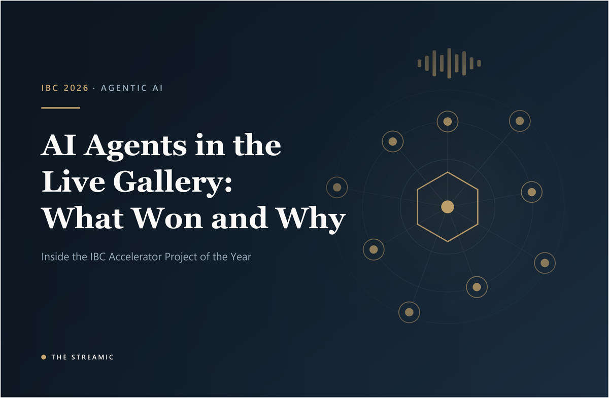

AI Agents in the Live Gallery: What the IBC Accelerator Project of the Year Actually Built
The IBC2026 Accelerator winner built a voice-controlled AI Assistant Director for live news. What it does, the protocols behind it, and governance questions.

Many "agentic AI" announcements in broadcasting stay at the concept stage. One project that has actually been built, demonstrated and repeatedly recognised is the IBC Accelerator AI Agent Assistants for Live Production. It took the Accelerator Project of the Year 2025 award at IBC2026, so it is worth looking closely at what it delivered — and at the questions it leaves open.
1. The recognition
TV Technology's IBC2026 winners list names the project as Accelerator Project of the Year 2025. It was championed by ITN, BBC and Channel 4, with participants including CUEZ, Amira Labs, Highfield AI, Monks, CuePilot, Shure, EVS, Moments Lab and Google Cloud. IBC's own reporting adds that the project had already won Best AI Innovation (Workflow) at the Broadcast Tech Innovation Awards in London on 27 November 2025.
2. What was actually built
According to IBC's project reporting, the team produced a proof of concept of a live gallery with a voice-controlled AI Assistant Director. That assistant acts as an "orchestrator agent": it coordinates and supervises a cast of specialised agents rather than doing every job itself. The reported agents covered:
- Audio
- Automation
- Checking
- Content discovery
- Graphics
- Music automation
- Rundown
- Transmission
- Video enhancement
The framework is described as open and vendor-agnostic, using Google-supported Gemini integrations for ADK, A2A and MCP, and it ran an end-to-end live news broadcast demonstration. Reported capabilities include managing show running orders, flagging errors, retrieving video sources and editorial clips on demand, and responding to a director's voice commands in real time.
3. Decoding the three protocols
Our explanation, for readers who see these acronyms on every vendor slide:
- MCP (Model Context Protocol) — a standard way to give an AI model access to tools and data. We covered its media use in The AI Orchestrator.
- A2A (Agent2Agent) — a protocol for agents to discover and communicate with one another, which is what lets one orchestrator supervise many specialists.
- ADK (Agent Development Kit) — Google's framework for building agents.
The practical significance is where the integration burden moves. Instead of each control-room product needing a bespoke connection to every other, vendors can expose capabilities through shared protocols. That is the same interoperability instinct driving open infrastructure efforts elsewhere on the show floor.
4. What it is — and what it is not
- It is a proof of concept from an innovation programme, not a shipping product. The recognition is for the approach and the collaboration between broadcasters and vendors.
- We found no independent evaluation of its reliability under real production pressure. Sources are IBC, trade press and participants. Treat claims about efficiency as unproven.
- It does not remove the director. The design puts the AI Assistant Director in a supporting role, taking commands from a human.
5. Governance questions every newsroom should ask
The project's own reporting does not publish a governance model, so the following is our analysis of what any broadcaster should settle before putting agents near a live gallery:
| Question | Why it matters |
|---|---|
| Which actions can an agent take versus only propose? | Suggesting a rundown edit and executing a transmission command carry very different risk. |
| Who approves anything that reaches air? | A named human approval step keeps editorial and legal responsibility clear. |
| Is every agent action logged? | An audit trail is needed for post-incident review and for corrections. |
| What happens when a voice command is misheard? | Galleries are noisy and fast. Confirmation rules for high-impact commands are essential. |
| Can each agent be disabled individually, with a manual fallback? | A failing "checking" or "graphics" agent should never take the show down with it. |
| How is the checking agent itself validated? | An automated checker that passes bad content is worse than none, because it creates false confidence. |
6. What to watch next
Look at vendor roadmaps for evidence that protocol-level agent support (MCP, A2A or equivalents) is moving from demonstration into released products, and ask which actions their agents can perform without human approval. The gap between an award-winning Accelerator demo and a control-room tool a duty editor will trust at 6 p.m. is where the real engineering work now sits.
Bottom line
The IBC Accelerator winner shows that an orchestrator-plus-specialists model for live news can be made to work end to end in a demonstration, using open protocols. It does not yet show that it is safe, reliable and accountable enough for routine transmission. Broadcasters should prototype now, but write the governance rules before the agents get anywhere near air.
Sources
- TV Technology: IBC2026 announces IBC Innovation Award winners — Accelerator Project of the Year; read in full
- IBC: 2025 Accelerator Project — AI Assistant Agents in Live Production — project page; seen in search summary only
- IBC: Accelerators triumph with Best AI Innovation at Broadcast Tech Awards — award details; seen in search summary only
- TechInformed: How broadcasters are using agentic AI in the control room — seen in search summary only
Editorial note: this analysis reflects publicly available information as of 9 October 2026. The governance table is our own analysis, not a description of the Accelerator project's design. We did not test the system.